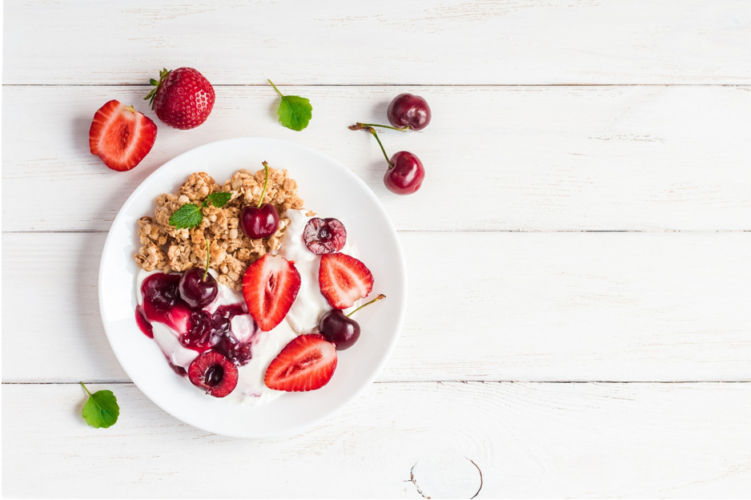
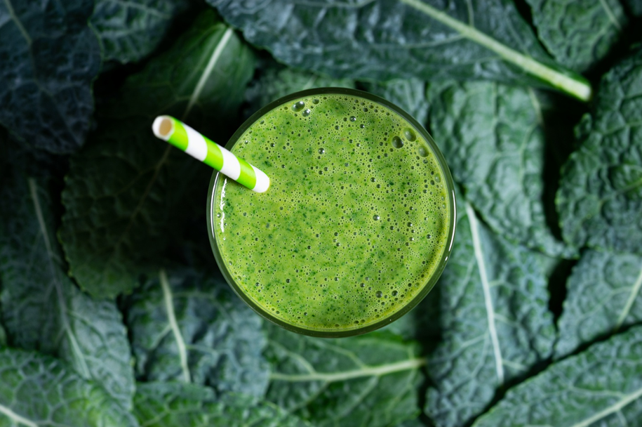

March is here, and with it comes National Nutrition Month—a time to refocus on healthy eating habits, mindful choices, and the incredible impact of nutrition on overall well-being. Whether you’re looking to enhance your energy levels, support your immune system, or simply feel better in your daily life, small, intentional changes can make a world of difference.
Nutrition is more than just eating the right foods—it’s about fueling your body with the nutrients it needs to thrive. A balanced diet supports physical health, mental clarity, and emotional well-being. By incorporating whole, nutrient-dense foods into your meals, you’re giving your body the best foundation for optimal performance.
Improving your diet doesn’t have to be overwhelming. Here are a few simple ways to make nutritious choices:
Mindful eating is a key component of a healthy lifestyle. Being present while eating helps improve digestion, prevents overeating, and enhances your relationship with food. Take the time to appreciate the flavors, textures, and nourishment your meals provide.
Nutrition is just one piece of the wellness puzzle. Incorporating stress management, physical activity, and self-care routines into your lifestyle complements a healthy diet. Try pairing your nutritious meals with regular movement, meditation, and quality sleep to feel your best inside and out.
Encourage healthy habits in your household by cooking together, trying new recipes, and discussing the importance of balanced meals. Small changes, like swapping sugary snacks for fresh fruit or opting for whole grains, can make a lasting impact on everyone’s health.
START YOUR JOURNEY TODAY!
This March, take the opportunity to evaluate your eating habits and set realistic goals for a healthier lifestyle. Whether it’s meal prepping, trying a new superfood, or simply drinking more water, every step counts. Let’s celebrate National Nutrition Month by making mindful, nourishing choices—your body will thank you!
How will you embrace nutrition this month? Head over to our Instagram and share your goals and favorite healthy recipes in the comments!
If you have any questions or would like more information on how we can support your wellness goals, feel free to contact us at www.betterwithij.health and schedule a consultation today.